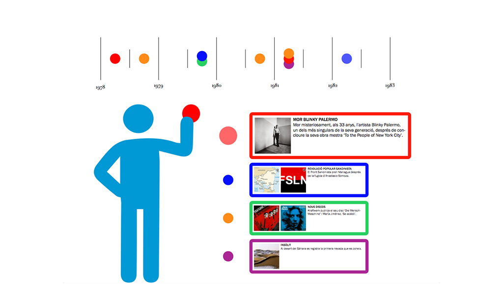

Instalation project for the exposition "Immaterial Heritage". It consists on a game that invites you to complete a timeline based on the contents of the exhibition. It works with the help of the Kinect tecnology and the shown images would be the projections on the wall. The user would control the menus the same way other kinect apps operate, holding your hand in place to pick up and the same to leave.
Barcelona 2015

.